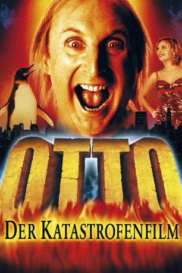

#5269 Otto 5 - Der Katastrofenfilm
 
 IMDB-Wertung: 4.2 / 10
IMDB-Wertung: 4.2 / 10  Metascore: 0
Metascore: 0 
Aus den unendlichen Tiefebenen Ostfrieslands kommt ein Mann nach Hamburg und klopft ans Tor zur Welt. Trotz umfangreicher Sicherheitsvorkehrungen der zuständigen Katastrofenschutzstellen kann er passieren und nimmt mit einem ahnungslosen Dampfer Kurs auf Amerika, um auch diese Neue Welt zu erobern. Was er hinterläßt ist eine Schneise der Verwüstung, eine Bresche der Verwirrung, eine Milchstraße voll Musik, eine Sackgasse voller Wahnwitze und vielleicht eine Spur zu viel Wortspiele auf Kosten anderer. Doch was das Schlimmste ist: Er hat darüber auch noch einen Film gemacht!
Jahr: 2000
Dauer: 84 Minuten
FSK: 6
Land: Deutschland Studio: Tobis StudioCanalTonspuren:
Untertitel:
Auflösung: 1080p (1920x800) Größe: 2385 MB
Genre: Komödie
Regisseur: Edzard Onneken
Drehbuch: Monte Merrick
Soundtrack:
Darsteller:
 Reiner Schöne als Kapitän Lackner
Reiner Schöne als Kapitän Lackner- Eva Haßmann als Sonja
 Wotan Wilke Möhring als Brock
Wotan Wilke Möhring als Brock Wilfried Hochholdinger als Chief
Wilfried Hochholdinger als Chief- Rainer Strecker als
 Kirsten Block als
Kirsten Block als  Ben Becker als Suitcase salesman
Ben Becker als Suitcase salesman Otto Waalkes als Otto / Baby-Otto / Großvater / Otti die Sängerin
Otto Waalkes als Otto / Baby-Otto / Großvater / Otti die Sängerin Steffen Münster als Kruse
Steffen Münster als Kruse- Alexander Hörbe als Becker
- Michael Schweighöfer als Kern
- Susanne Schwab als Old Speis Görl
- Michaela Hanser als Old Speis Görl
- Petra-Maria Cammin als Old Speis Görl
- Eva Blum als Old Speis Görl
- Tilly Lauenstein als Old Woman with Dog
 Boris Aljinovic als Peasant Doctor
Boris Aljinovic als Peasant Doctor- Matthias Redlhammer als
- Konstantin Graudus als
- Bernd Stegemann als Hungry Passenger
- Felix Bresser als Terrorist
- Josef Ostendorf als Otto's Father
- Anja Schneider als
- Weijian Liu als
- Horst Tomayer als Priest
- Beate Pfeiffer als
- H.H. Müller als
- Hans Fleischmann als
- Manni Meyer als
- Katharina Voss als Number Five
- Sven Philipp als Reporter
- Dai-Jo Son als Manimaka-San
- Peter Lehwald als
- Antje von der Ahe als Yvonne
- Lynne Williams als Monya
- Aykut Kayacik als
- Jessica Steinke als
- Yanna Weber als
- Martina Angeletti als
- Die Gropiuslerchen als
- Detlef D. Soost als Sailor with Flag #1
- Jan Böttcher als Sailor with Flag #2
- Colin Rich als Sailor with Flag #3
- Andreas Phole als Sailor with Flag #4
- Alexander Grünwald als Sailor with Flag #5
- Rafael Kreßmann als Sailor with Flag #6
Datei: X:\6-Hexalogie(A-Z)\Otto\Otto 5 - Der Katastrofenfilm (2000, FSK6, 1920x800).mkv seit 09.01.2017
Festplatte: HD Collection-3(N-Z)-6(A-Z)
 Es gibt insgesamt 9 Filme in der Gruppe '6-Hexalogie(A-Z)\Otto'
Es gibt insgesamt 9 Filme in der Gruppe '6-Hexalogie(A-Z)\Otto'